List of MicroSims for The Eight-Hour Entrepreneur¶
Interactive MicroSims that let you practice each step of the course: sorting assumptions from evidence, narrowing a customer, testing an offer, checking the numbers, and pitching.
-
30-Day Launch Roadmap Timeline
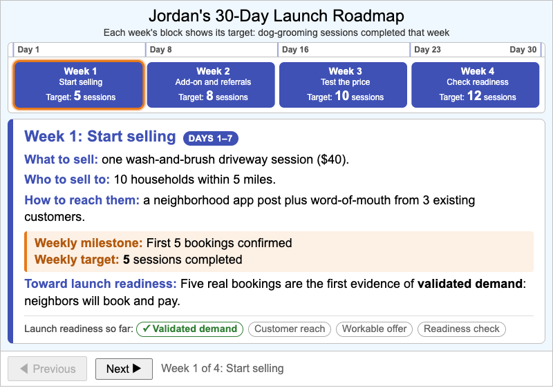
A step-through timeline of Jordan's 30-day launch plan showing each week's plan, weekly milestone, and weekly target, and how the four weeks build toward launch readiness.
-
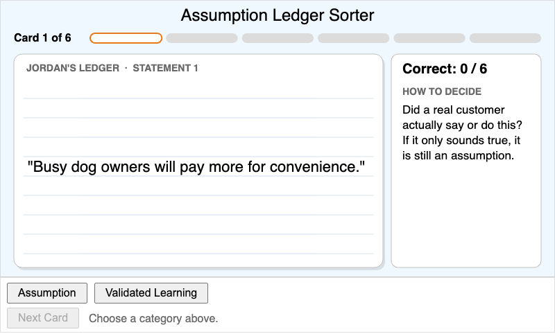
A six-card sorting quiz in which learners classify statements from Jordan's dog-grooming idea as either untested assumptions or validated learning, with immediate feedback on every card.
-
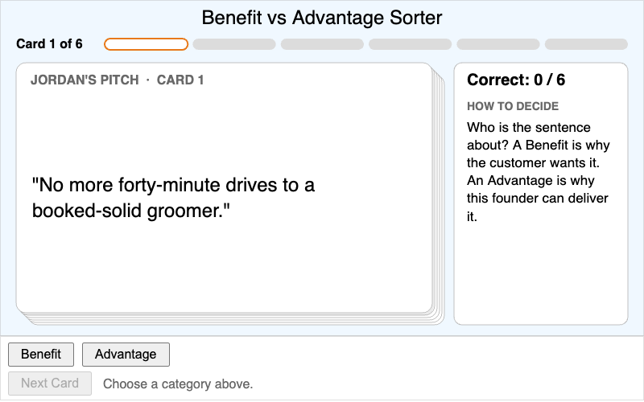
A six-card sorting quiz in which learners classify value-proposition statements from Jordan's dog-grooming idea as customer Benefits or founder Advantages, with immediate feedback on every card.
-
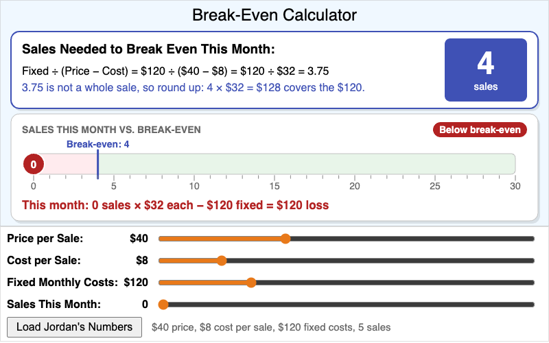
Learners adjust price, cost per sale, and fixed monthly cost sliders to calculate how many sales a lean venture needs to break even, starting from Jordan's $40 dog-grooming session.
-
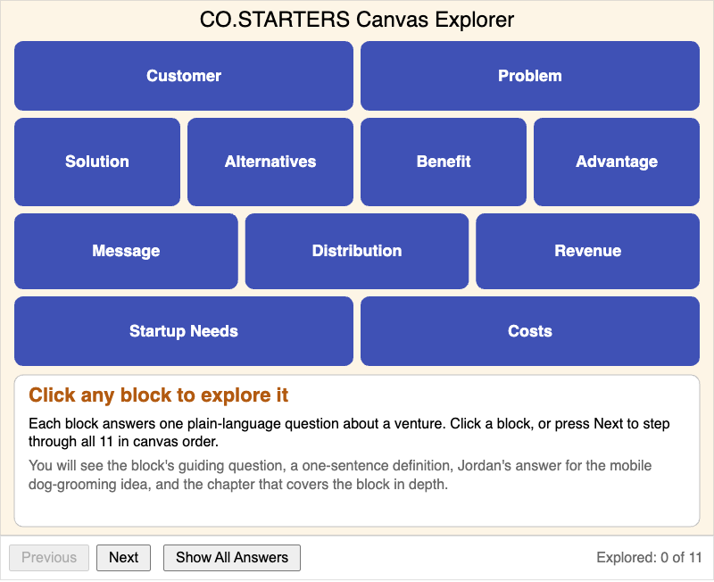
A clickable map of the 11-block CO.STARTERS Canvas, filled in with Jordan's Session 1 dog-grooming answers, showing each block's guiding question, definition, example answer, and chapter.
-
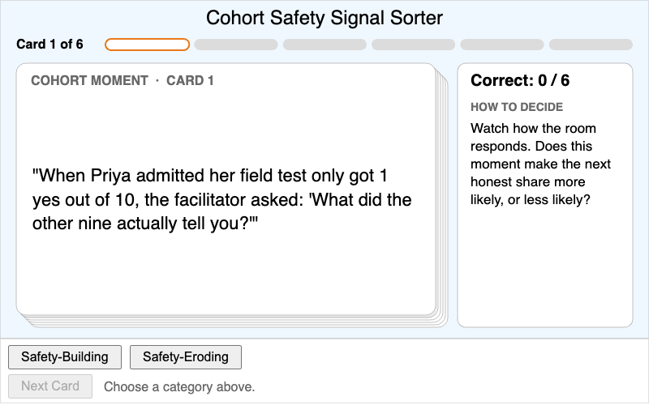
A six-card sorting quiz in which learners classify moments from a live cohort session as Safety-Building or Safety-Eroding, with immediate feedback on every card.
-
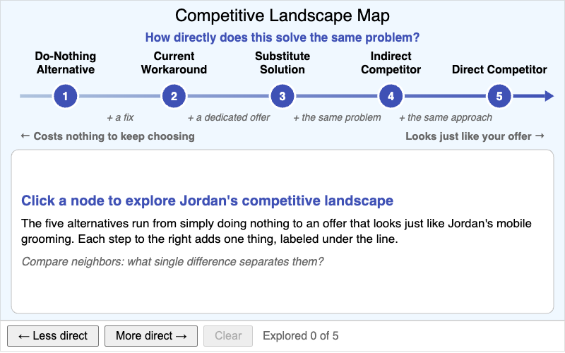
Learners differentiate the five kinds of alternative to Jordan's mobile dog-grooming idea, from the do-nothing alternative to a direct competitor, by how directly each solves the same problem.
-
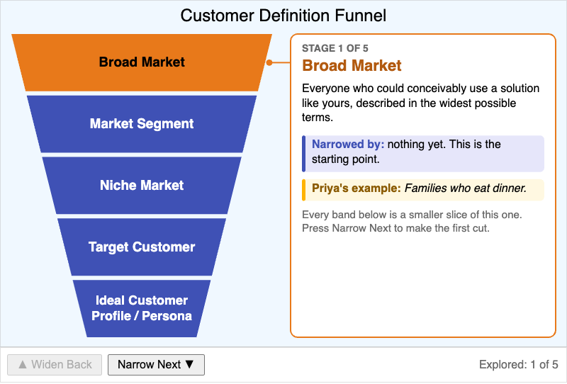
A step-through funnel that narrows Priya's meal-prep market from families who eat dinner down to Dana, one persona, showing each stage's definition, the filter that narrowed it, and a concrete example.
-
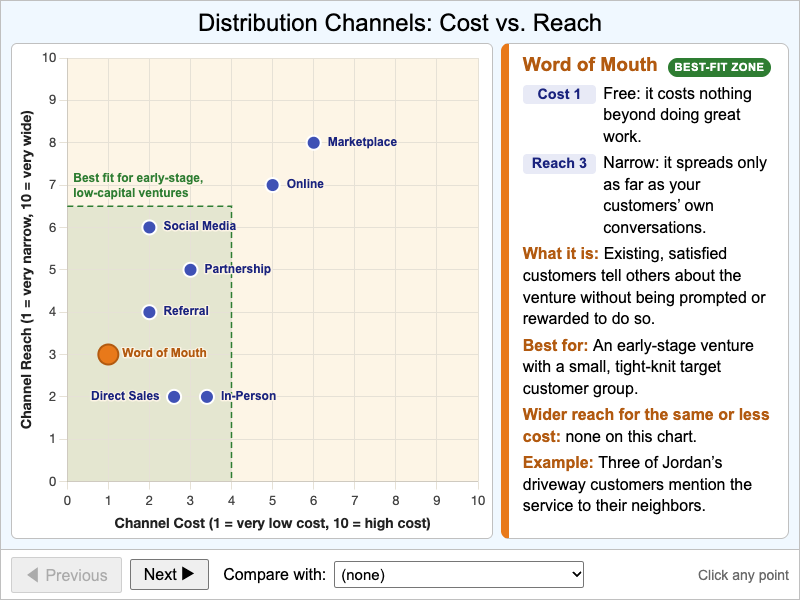
An interactive scatter plot that places eight distribution channels by cost and reach, so learners can compare them and judge which ones fit an early-stage venture with limited resources.
-
Leading vs Open-Ended Question Sorter
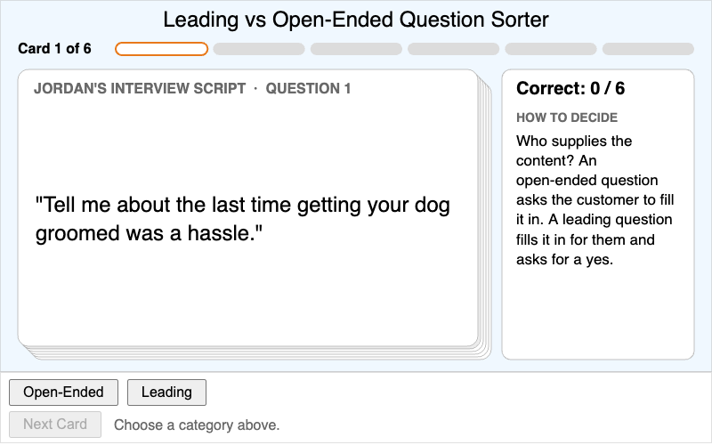
A six-card sorting quiz in which learners classify discovery-interview questions as open-ended or leading, with immediate feedback and an open-ended rewrite of every leading question.
-
Minimum Testable Iteration Decision Tree
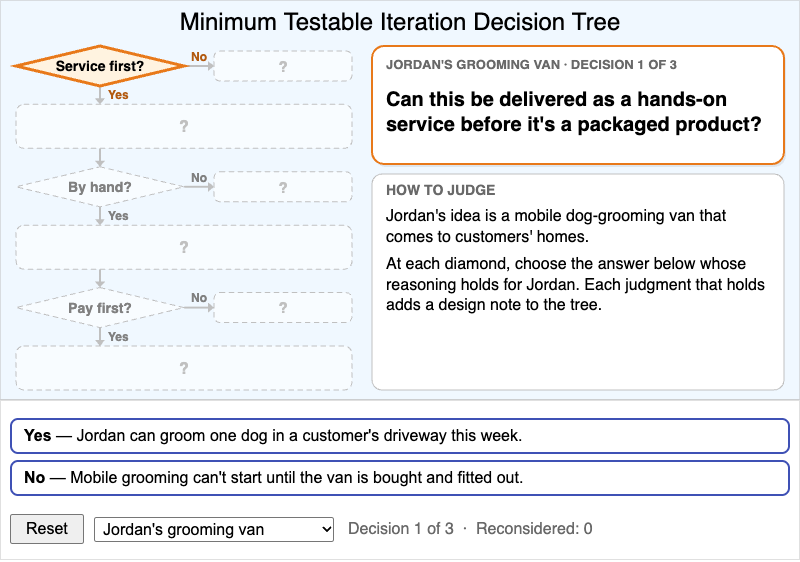
Learners judge whether service before product, manual before automated, and pre-selling before building apply to Jordan's or Priya's venture, then justify the minimum testable iteration the three judgments produce.
-
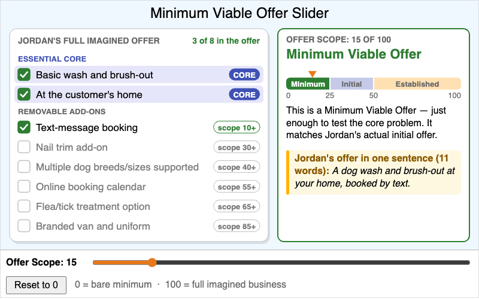
Learners drag an Offer Scope slider to shrink or grow Jordan's mobile dog-grooming offer and see which features are the essential core and which are removable add-ons.
-
One-Sentence Value Proposition Builder
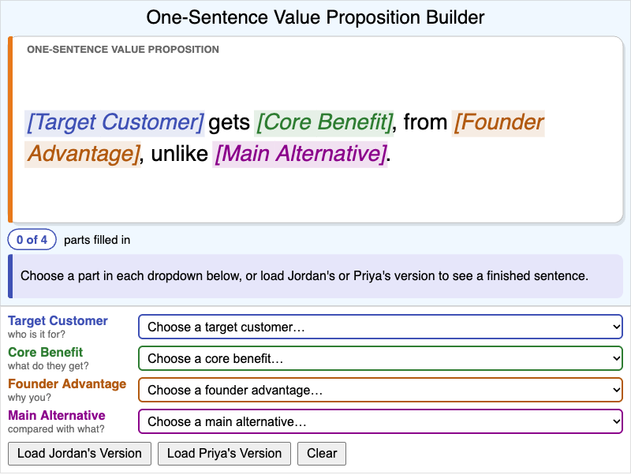
Learners compose a one-sentence value proposition from four parts: target customer, core benefit, founder advantage, and main alternative. The sentence updates live, with feedback on missing parts, generic words, and read time.
-
Persevere vs Pivot Signal Checker
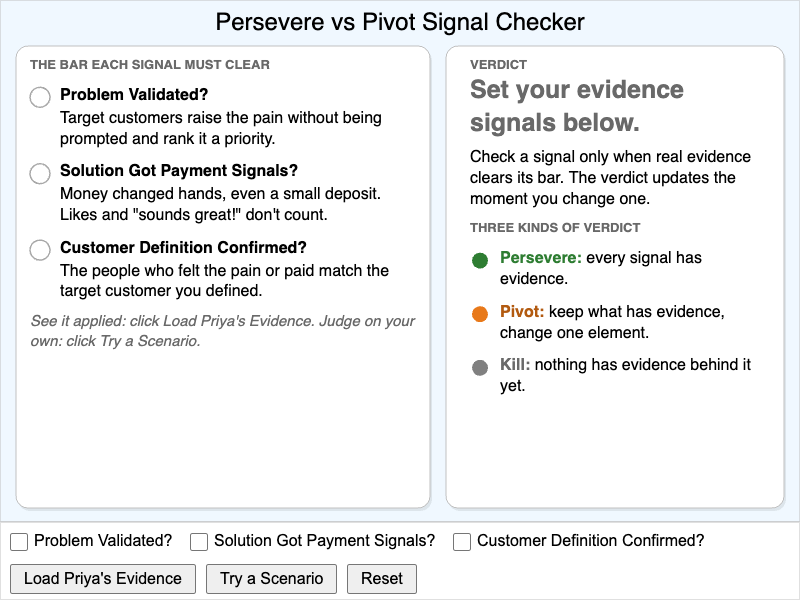
Learners set three validation evidence signals to see whether the pattern supports a persevere, pivot, or kill decision, then judge the evidence from four practice ventures and get feedback on each signal.
-
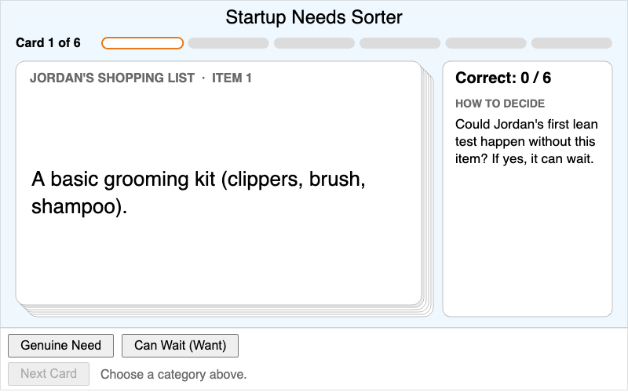
A six-card sorting quiz in which learners classify items Jordan is considering buying as a Genuine Need or a want that can wait, with immediate feedback on every card.
-
Symptom vs Root Cause Drill-Down
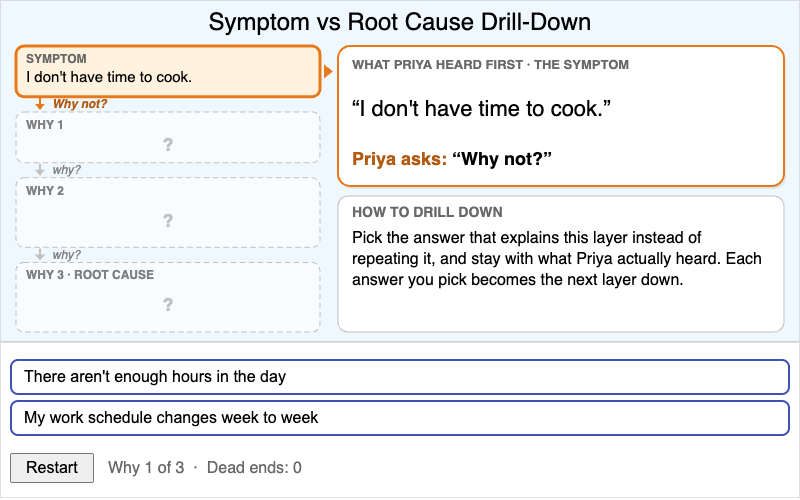
Learners apply the repeated why technique to Priya's first interview complaint, choosing the answer that explains each layer until they reach the root cause, with feedback on every dead end.
-
The Field Discovery Window Rhythm
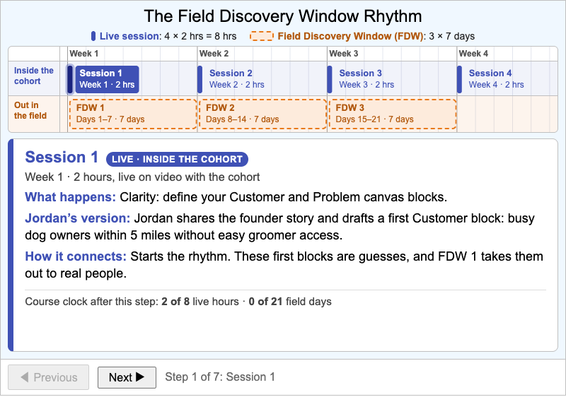
A step-through timeline of the four-week course showing what happens in each 2-hour live session and each 7-day Field Discovery Window, and how each one feeds the next.
-
The Four-Phase Founder Pipeline
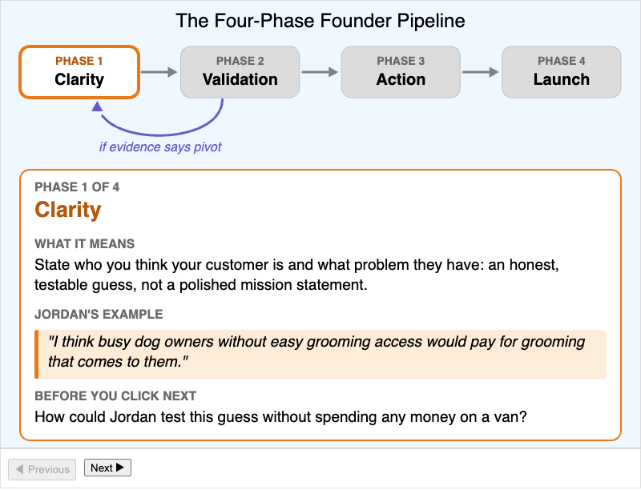
A step-through infographic of the Clarity, Validation, Action, and Launch phases, pairing each definition with Jordan's concrete example and a predict-before-you-advance prompt.
-
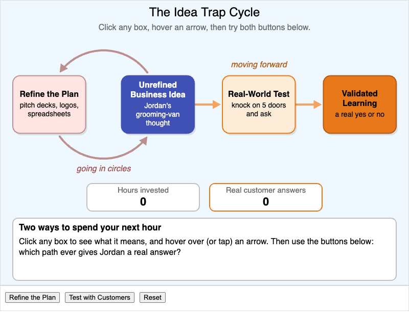
An interactive diagram that contrasts the closed "refine the plan" loop with the open "real-world test" path, using counters to show that only testing produces real customer answers.
-
Two-Minute Pitch Structure and Timer
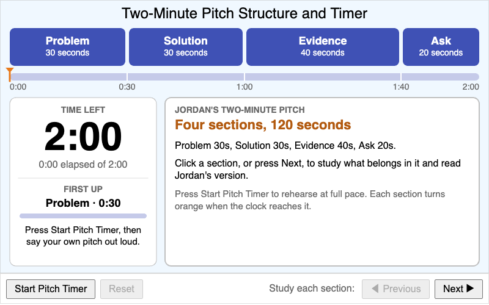
Learners study the four timed sections of Jordan's two-minute pitch (Problem, Solution, Evidence, Ask), then rehearse their own pitch against a 120-second countdown that highlights each section on time.